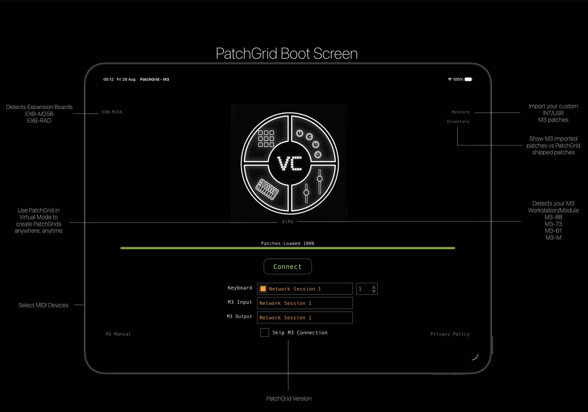
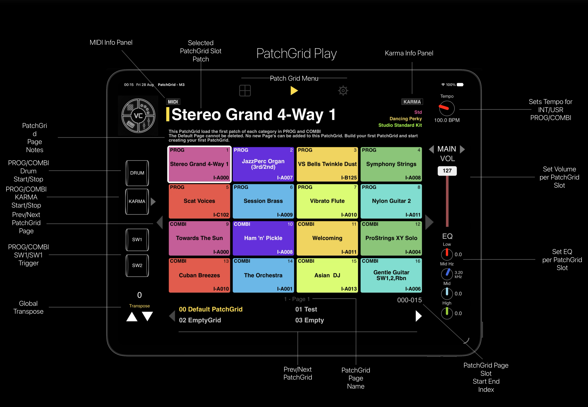
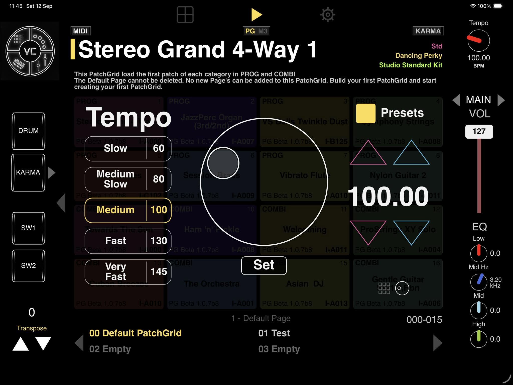
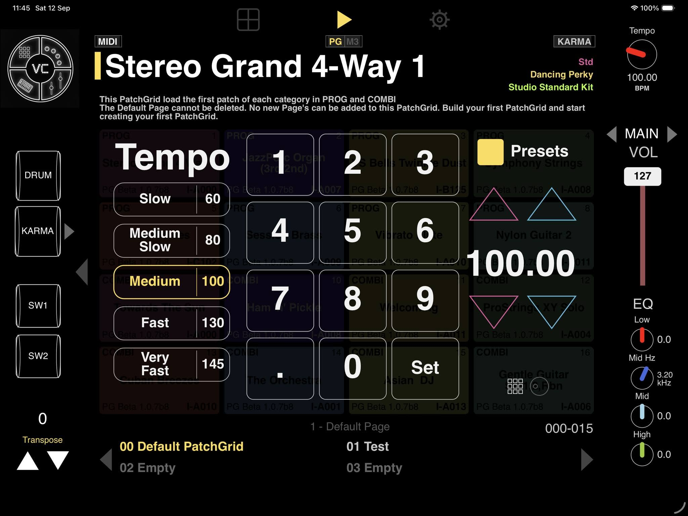
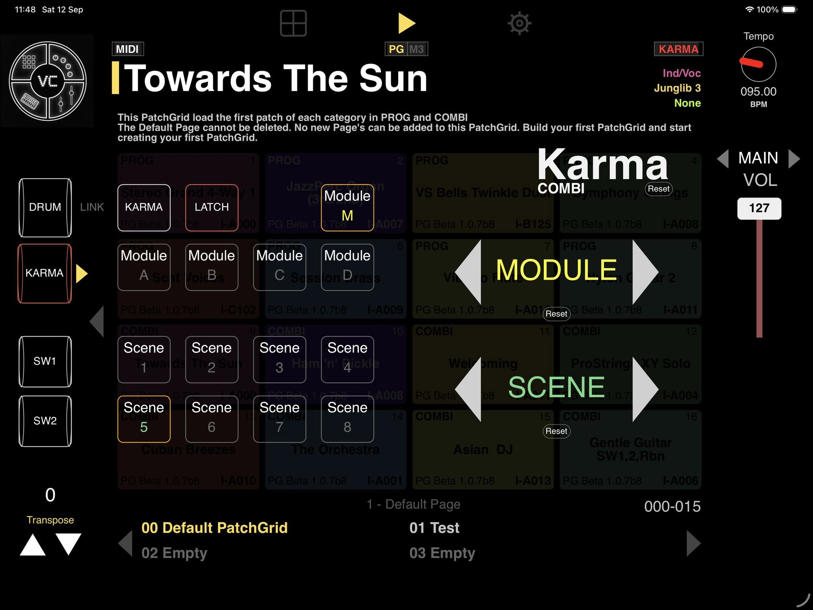
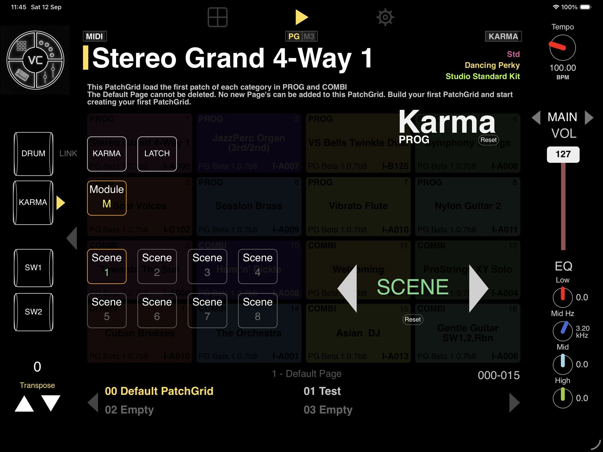
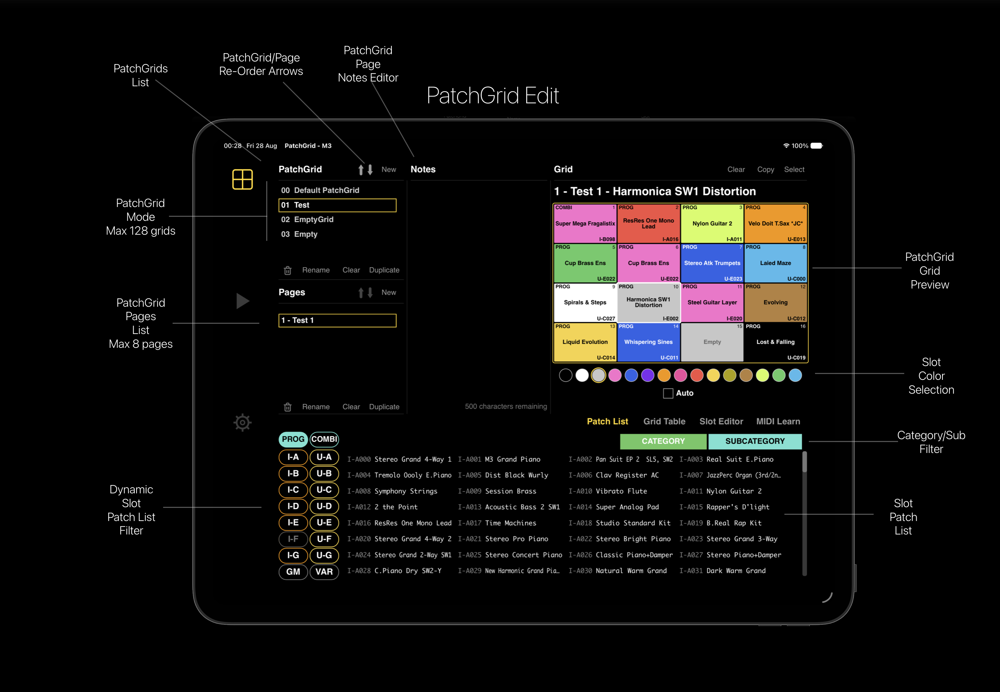
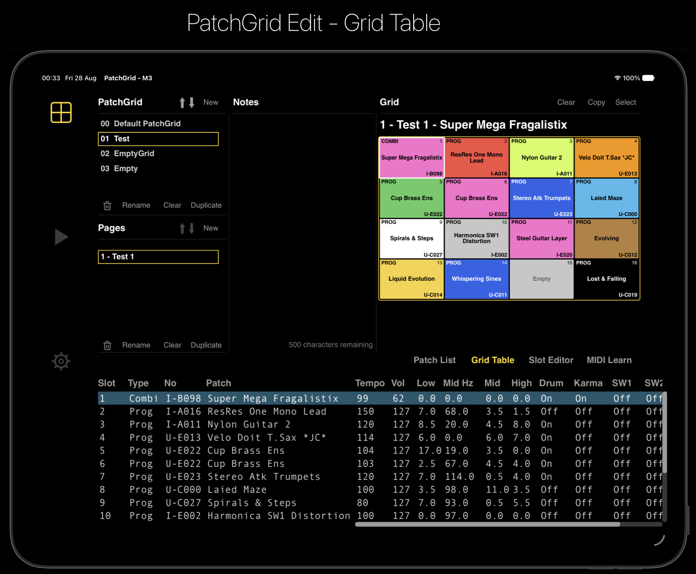
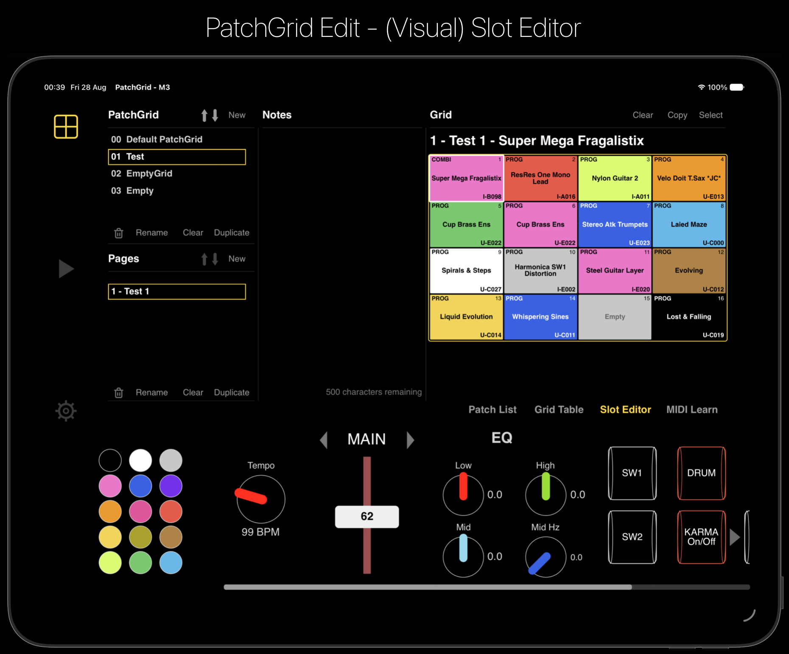

PatchGrid - M3
User Manual
PatchGrid - M3 User Manual
A practical guide to arranging, selecting, and performing Korg M3 patches.
PatchGrid is a performance-oriented patch organizer for the Korg M3. It presents patches as a 4 x 4 grid so you can select sounds quickly, arrange them into pages, and adjust useful performance controls from one screen.
Feature summary
Launch and layout
- Instant patch launch from a visual 4 x 4 slot grid
- Multi-page PatchGrids for larger sound sets
- Independent reorder modes for PatchGrids and pages
- One-touch selection sends the chosen patch directly to the M3
- Dedicated Play view for quick access during performance
- Dedicated Edit view for building and managing PatchGrids
Sounds and storage
- Stores both PROG and COMBI patches in the same PatchGrid workflow
- Up to 16 slots per page
- Up to 8 pages per PatchGrid
- Up to 128 saved PatchGrids
- Default PatchGrid auto-populates starter sounds from PROG and COMBI categories
- Default PatchGrid includes starter notes explaining its sample sounds
Per-slot control
- Per-page, per-patch performance-control overrides
- Saved controls include Tempo, Volume, EQ, Transpose, SW1, SW2, Drum Track, and KARMA
- 16 slot colours with Auto Colour and quick two-tap colour selection
- Built-in patch browser for assigning sounds to slots
- Filter patches by type, bank, category, and sub-category
Editing and management
- PatchGrid naming with duplicate-name protection and input validation
- Rename, duplicate, clear, and hide PatchGrids
- Duplicate PatchGrids with all pages and slot data under a new name
- Duplicate and clear individual pages
- Copy and paste single slots between positions
- Remembers the last selected page and slot when reloaded
- Saves PatchGrid data, slot settings, colours, and notes to file
- Notes support up to 500 characters with a remaining-character counter and scrolling
Settings - Import / Restore
The  Settings item opens the Import and Restore workflows.
Settings item opens the Import and Restore workflows.
Import
Use Import to read patch data from the connected M3 into the application's patch storage.
- Open Settings using the Gear icon and choose Import.
- Choose the patch type and the banks, categories, sub-categories, or patches to read.
- Click Start to begin the MIDI extraction.
- Wait for extraction to finish before returning to PatchGrid.
Import is the device-connected workflow. It requests Program, Combination, or GM patch data from the M3 and stores the returned data. Click Cancel while extraction is in progress if you need to stop it.
Restore
Use Restore to restore selected shipped default patches without reading them from the M3.
- Open Settings using the Gear icon and choose Restore.
- Choose PROG, COMBI, or GM.
- Select individual patches, or use SELECT ALL and SELECT NONE.
- Click Restore Defaults.
- Confirm the restore when prompted.
Restore is available in offline storage mode. It replaces the selected stored patches with the corresponding shipped defaults. A patch that has already been restored is not selectable again during the same restore session.
Leave the Settings view
Click Exit to leave the Import/Restore view. When Settings was opened from PatchGrid, the app returns to PatchGrid and reloads its patch data before normal use resumes. If you opened the workflow from another view, the app returns to that originating view instead.
Disclaimer
Before you begin
PatchGrid supports a direct USB-wired MIDI connection between the iPad and the Korg M3. Bluetooth MIDI, network MIDI, Wi-Fi MIDI, and other wireless or network connection methods are not supported.
The PatchGrid Boot screen

The Boot screen is the first screen used to prepare PatchGrid. It detects the connected M3 and supported expansion boards, loads the available patch data, and provides the MIDI connection controls.
The Keyboard selector can be used to choose from the available MIDI inputs, including multiple connected keyboard inputs. M3 Input selects the MIDI input used to receive data from the M3, and M3 Output selects the MIDI output used to send patches and controls to the M3. Use Connect after selecting the required devices.
Select Skip M3 Connection when you want to use PatchGrid without connecting to an M3. PatchGrid remains available for offline editing, browsing, and organizing patches; the M3 will not receive patch changes until a connection is made.
The Inventory text button switches the visible patch inventory between patches imported from the M3 and the preset patches supplied with PatchGrid. Use it to confirm which patch source is being displayed before assigning sounds.
The Privacy Policy and PG Manual text links open the product privacy information and this user manual.

The PatchGrid screen
Play selects and performs patches.  Edit assigns patches, manages PatchGrids and pages, edits notes, and adjusts slot settings.
Edit assigns patches, manages PatchGrids and pages, edits notes, and adjusts slot settings.  Settings opens Import and Restore.
Settings opens Import and Restore.
The centre of Play mode is a 4 x 4 grid of 16 slots. A slot can contain a Program, a Combination, or be empty. Each PatchGrid can contain up to 8 pages, and the application supports up to 128 saved PatchGrids.

The MAIN, VOL, slider, and EQ controls sit lower in the Play view; DRUM, KARMA, SW1, and SW2 are repositioned on the left; and the transpose controls sit farther right. The VC logo is visible in Play mode and hidden in Edit mode. The PatchGrid selector uses a 2 x 2 layout, with its previous and next arrows kept within the selector width.
Play mode
Select a patch
- Click Play.
- Click a filled slot.
- PatchGrid sends the corresponding bank and program change to the M3.
Click an empty slot to select it. In Play mode, drag it through the available patches to populate it, or use Edit mode when you want to browse and assign a specific patch.
Change page or PatchGrid
- Use the arrows beside the grid to change page.
- Use the PatchGrid selector arrows to move through saved PatchGrids.
- Select a PatchGrid entry to load it.
- In Edit mode, tap the combined reorder icon beside PatchGrid to turn PatchGrid reorder mode on or off.
- Use the Pages reorder icon separately when you want to reorder pages.
When a reorder mode is on, its icon is yellow and remains active until tapped again. Drag the selected PatchGrid or page to reorder it; the insertion marker shows whether it will be placed above or below the target row. When reorder mode is off, dragging the list scrolls it. PatchGrid and page reordering are independent, and the order is saved and restored after the app restarts. The first page of the built-in Default PatchGrid cannot be deleted or cleared, and its next-page arrow is hidden when no next page is available.
Performance controls
- Drum toggles the drum track.
- KARMA On/Off toggles KARMA.
- SW1 and SW2 toggle the M3 switches.
- TRANSPOSE changes transpose from -12 to +12 semitones.
- Tempo and volume can be adjusted from the performance panel. Drag rotary controls or the volume slider vertically.
Bi-directional M3 control
When PatchGrid is connected through the selected M3 Input and M3 Output ports, supported changes can travel in both directions. Changes made in PatchGrid are sent to the M3. Changes made on the M3 to Tempo, Drum Track, KARMA, SW1, SW2, and Program or Drum Track EQ are immediately reflected in the controls displayed for the selected PatchGrid slot. Program and Drum Track EQ synchronization applies to PROG patches.
M3-originated control changes are shown as live values. They are not sent back to the M3 and are not automatically saved as slot overrides. Use Save on a normal PatchGrid page when you want to retain the current supported performance-control values for that patch and page.
PatchGrid also recognizes patch selections made on the M3. It uses the M3 mode to distinguish a PROG from a COMBI, then matches the bank and program number against the loaded patch information. When a match is found, the selected PatchGrid slot immediately displays that patch and its type. If the selection cannot be matched, the current slot remains unchanged.
Modal popups
Play mode provides larger modal controls for Tempo and KARMA. A modal temporarily covers the slot grid so the selected control can be adjusted directly.
Tempo popup
Tap the displayed tempo value to open the Tempo popup. It starts with the selected slot's current tempo and supports values from 40.00 to 300.00 BPM.
Choose the keypad icon to enter a tempo directly, including a decimal value, then tap Set to apply it. Choose the encoder icon to adjust the value with a rotary drag, then tap Set. The pink arrows change the tempo by 1 BPM and the blue arrows fine-tune it by 0.01 BPM.
Enable Presets to show the supplied tempo choices: Slow 60, Medium Slow 80, Medium 100, Fast 130, and Very Fast 145 BPM. Selecting a preset applies it immediately. Tap outside the popup, press Escape, or move focus away to close it without applying an unfinished keypad or encoder value.


KARMA Controls popup
Tap the small arrow beside KARMA On/Off to open the KARMA Controls popup. Use KARMA Link to link Drum Track operation to KARMA, and use Latch to switch KARMA Latch on or off.
For a COMBI, direct Module buttons select M, A, B, C, or D. A PROG uses the master module only. Direct Scene buttons select Scene 1 through Scene 8. The Module and Scene previous and next arrows step through the available values and wrap at the ends.
Use the Module or Scene Reset control to restore that original value. The main Reset restores the patch's original KARMA On/Off, Link, Latch, Module, and Scene settings. Tap outside the popup to close it. The KARMA On/Off control remains available while the popup is open.


On a normal PatchGrid page, use Save to store the current performance-control values for the selected patch on that page. When that patch is loaded again, its saved controls are restored and sent to the M3, and Save is highlighted. Tap the highlighted Save button to remove only that patch's saved controls for the current page and return to the patch's normal controls. Save is not available for the protected Default PatchGrid.
In Play mode, drag a filled slot horizontally through patch numbers in its bank or vertically through categories. Both directions wrap at the end. During the drag, the selected slot shows the previous, current, and next patch names; the preview disappears when the drag ends and the selected patch is saved.
To fill an empty slot by dragging through patches, start a straight drag on the empty slot and continue through the available patch selection. The selected slot changes as the drag continues and the final selection is saved when the drag ends.
The MIDI Status Strip initially shows MIDI. Tap it to expand SYSEX, PC, CC, BANK, and NOTE, then tap again to collapse it. The KARMA Status Strip initially shows KARMA; tap it to show LATCH or OFF, the active module, and the scene for the selected slot.
When the selected PROG or COMBI contains drum-track data, Play mode shows the drum pattern category, drum pattern, and drum kit above the performance controls. PatchGrid resolves these names from the loaded M3 MIDI dump and its drum pattern and drum kit lookups.
Edit mode
The editor has three tabs: Patch List for assignment, Grid Table for an overview of all 16 slots, and Slot Editor for detailed settings.

The selected slot has a thicker outline for clear identification. The VC logo is hidden in Edit mode.
Assign a patch
- Open Edit.
- Select the target slot in the grid or Grid Table.
- Choose COMBI or PROG in Patch List.
- Use bank, category, and subcategory filters as needed.
- Scroll and click a patch to assign it.
- Click Play when ready.
Drag the patch list, use its scrollbar, or use the mouse wheel over it.
Edit a slot
- Select a filled slot.
- Open Slot Editor.
- Choose a colour and adjust tempo, volume, EQ, Drum, KARMA, SW1, or SW2.
The EQ controls are Low, Mid, Mid Hz, and High. Values are stored per slot and per page. Two quick taps on a slot apply a contrasting unused colour automatically; the colour palette contains 16 choices.
Grid Table view

Slot Editor view

Edit notes
- Click the notes area in Edit mode.
- Type the notes. Notes are limited to 500 characters; the remaining-character counter shows the available space.
- Click Save or Cancel.
Escape cancels an active notes edit. Losing focus does not save it. The notes area scrolls when the text is longer than the visible field. A new Default PatchGrid starts with: “This patch grids load the first of each category in PROG and COMBI to give you some options to try out the sounds.”
Manage PatchGrids
Create
- Open Edit and click New beside Patch Grids.
- Enter a unique, non-empty name of no more than 23 characters.
- Press Return or click Add.
Default PatchGrid is reserved. Escape or Exit cancels without creating a file.
Rename
Select a PatchGrid, click Rename or the pencil icon, edit the name, then confirm with Return or Add. Invalid, duplicate, empty, and reserved names are rejected without changing the existing name.
Pages
- New adds a blank page, up to eight pages.
- Duplicate copies the current page.
- Clear removes assignments and settings from the current page.
- The trash button deletes a page after a second confirmation click.
Page 1 cannot be deleted. The first page of Default PatchGrid cannot be cleared. Tap the combined reorder icon beside Pages to turn page reorder mode on or off, then drag the selected page. The insertion marker shows where it will be placed. The mode remains active until tapped again. The Default PatchGrid cannot receive additional pages; its next-page arrow is hidden. When blocked, the app warns: “The Default Page cannot be deleted. No new Page's can be added to this PatchGrid.”
Clear, duplicate, or delete
Use Clear to empty a selected PatchGrid. Use Duplicate to enter a new unique name, then create an ordinary PatchGrid containing a copy of every page and its slot data. The trash button requires a second confirmation click before deletion. The built-in Default PatchGrid cannot be cleared or deleted.
Copy and paste slots
One slot
- Select the source slot.
- Click Copy.
- Click the target slot.
The patch, controls, and colour are pasted together. Click Copy again to cancel.
Saving and persistence
PatchGrid saves assignments, page changes, slot controls, colours, notes, names, and page structure as they change. Performance-control overrides saved with Save belong to a specific patch on a specific page. Returning to Play also commits the current editing state and refreshes the PatchGrid list.
Troubleshooting
Patch names or lists are missing
Wait for patch loading to finish. PatchGrid requires both Program and Combination data before it can build the complete browser and Default PatchGrid.
The M3 does not change sounds
Check the selected MIDI output, connection, MIDI channel, and M3 receive status.
A new PatchGrid was not created
Check the name and confirm with Return or Add. Losing focus does not create it.
A delete or clear action did not happen
Deletion requires a second click. The built-in Default PatchGrid and its first page have additional protection.
Edited text reverted
Use Save for notes or Return/Add for a name. Escape or Cancel restores the previous value.
Quick reference
| Task | Action |
|---|---|
| Select a patch | Play > click a filled slot |
| Move to another page | Click a page arrow |
| Re-order PatchGrids | Edit > tap PatchGrid reorder icon > drag selected PatchGrid |
| Re-order pages | Edit > tap Pages reorder icon > drag selected page |
| Assign a patch | Edit > select slot > Patch List > click patch |
| Edit slot controls | Edit > select slot > Slot Editor |
| Add a PatchGrid | Edit > New > name > Add or Return |
| Rename a PatchGrid | Edit > Rename or pencil > name > Add or Return |
| Add a page | Edit > Pages > New |
| Duplicate a page | Edit > Pages > Duplicate |
| Copy one slot | Select source > Copy > select target |